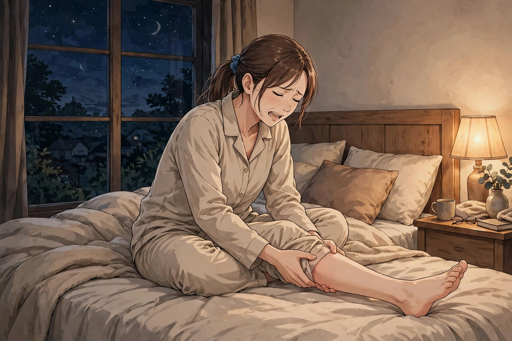
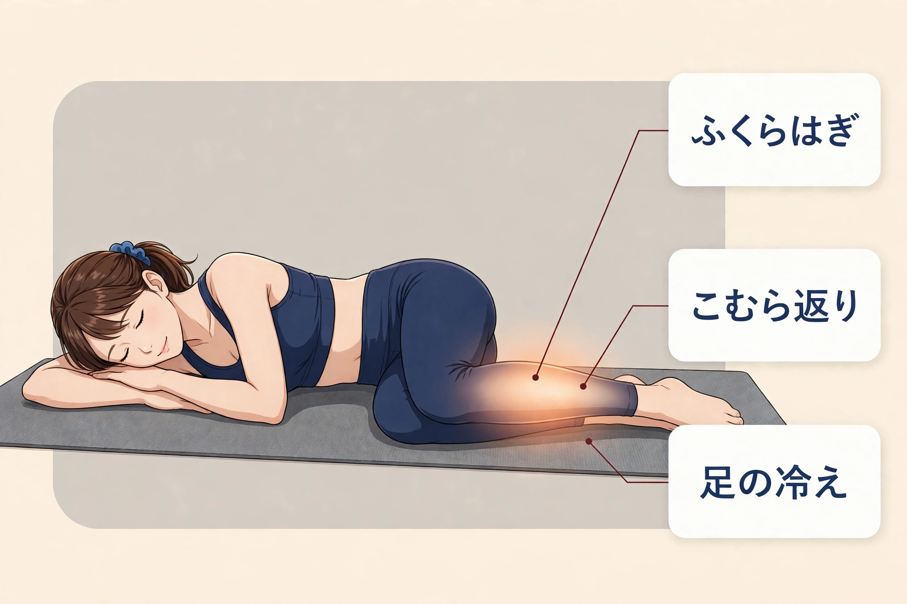

足がつる・こむら返り
美容整体ステラ・ポラリス東三国｜大阪市淀川区東三国・東三国駅徒歩5分・女性向け

夜中のこむら返りに振り回されない、朝まで眠れる脚へ
眠っている最中、ふくらはぎが突然つって痛みで目が覚める——こむら返りは、多くの方が経験する身近なつらさです。夜間や明け方に起こりやすく、冷えや昼間の脚の疲れ、水分不足などが重なって起こると言われています。つったあとの痛みが翌日まで残ることもあり、「また今夜もつるのでは」と不安になる方も少なくありません。このページでは、足がつる背景にある仕組みと、つりにくい脚の状態を目指す当サロンでのケア、ご自宅でできるセルフケアをご案内します。頻繁に繰り返す場合の受診の目安もあわせてご確認ください。つる場所はふくらはぎが多いものの、足の裏や太ももがつる方もいます。頻度が増えてきた、痛みが残るようになってきたと感じたら、脚の状態を見直すきっかけにしてみてください。
ご予約はこちら（Coubic）こんなお悩みありませんか
- 夜中や明け方に、ふくらはぎがつって目が覚めることがある
- つったあと、しばらく痛みや張りが残る
- 冷えた日や、エアコンの効いた部屋で寝た日につりやすい
- 立ち仕事やよく歩いた日の夜につることが多い
- 水分をあまりとらないほうだと思う
- 運動のあとや、ストレッチのときにつりそうになる
- ふくらはぎがいつも張っていて、固く感じる
当てはまる項目が多いほど、ふくらはぎの疲れと冷え、巡りの滞りが重なっている目安とされています。足のつりは一つの原因で起こるものではなく、昼間の使い方と夜の状態がつながっています。次のセルフチェックで、ふくらはぎの状態の傾向を確かめてみましょう。
簡単セルフチェック（ふくらはぎの柔らかさチェック）
座った状態で、ふくらはぎと足首の状態を確かめる簡単な方法です。
- 椅子に座り、ふくらはぎの一番太い部分を両手で包むように触ります。力を抜いた状態で、指が沈む柔らかさがあるかを確認します。
- つま先を手前へ引くように足首を曲げてみます。ふくらはぎの伸び感が左右で大きく違う場合は、張りの偏りがある目安と言われています。
- 足首をゆっくり回してみます。動きが小さく、途中で引っかかる感じがある場合は、ふくらはぎまわりが固まっている目安です。
※これは診断ではありません。ご自身の状態の傾向を知る目安としてお使いください。
足がつる・こむら返りの原因と仕組み
筋肉が縮んだまま戻りにくくなる仕組み
足がつるのは、ふくらはぎの筋肉が強く縮んだ状態になり、自分の意思ではゆるめにくくなる現象だと言われています。筋肉は本来、縮む・ゆるむを繰り返して働きますが、疲れや冷えが重なると、ゆるむ側の働きが鈍り、縮んだまま固まりやすくなります。図1のように、ふくらはぎの状態ひとつで、夜中のつりの起こりやすさは変わってきます。睡眠中は筋肉の緊張を調整する働きもゆるやかになるため、昼間よりつりやすい条件がそろいやすい時間帯だと言われています。

図1 ふくらはぎの筋肉が縮んで固まった状態と、ゆるんで柔らかく、巡りが助けられている状態のイメージ。体の状態には個人差があります。
冷えと巡りの関係
眠っている間は体温が下がりやすく、足先が冷えると巡りも滞りやすくなります。巡りが滞ると筋肉に必要なものが届きにくく、老廃物も流れにくくなるため、筋肉が過敏に反応しやすい状態になると言われています。夏のエアコンや冬の冷え込みでつりやすくなるのは、このためと考えられています。足先の冷えは、布団から足が出ていたり、締めつけの強い靴下で寝ていたりすることも一因になります。寝るときの足元環境も見直しどころです。
水分と筋肉の働き
体の水分が不足すると、筋肉の働きを調整するバランスが崩れやすくなると言われています。汗をかく季節や、入浴後、寝る前に水分をとらない習慣が続くと、夜中のつりにつながることがあります。日中の水分のとり方も、夜の脚の状態に関わるポイントです。アルコールを飲んだ日や、汗を多くかいた日は、水分が不足しやすい条件が重なります。思い当たる方は、夜の水分のとり方を意識してみてください。日中に汗をかく機会が多い方は、帰宅後の水分補給も意識してみてください。
昼間の脚の使い方の積み重ね
立ちっぱなしや歩き回る仕事、運動のあとのケア不足などでふくらはぎに疲れが溜まると、夜になってつりやすくなります。ヒールでつま先側に体重がかかる姿勢が続くことも、ふくらはぎが縮んだまま固まる一因です。昼間に溜まった張りを、その日のうちにほぐす習慣が大切になります。昼間の疲れを夜に持ち越さないためには、帰宅後や入浴時にふくらはぎをゆるめる時間を取ることが、つりにくい脚づくりの土台になります。入浴の時間は、脚をゆるめる大切な機会です。
セルフケアで足りる場合・サロンケアが向く場合
つる頻度が少なく、ふくらはぎを温めたり伸ばしたりすると落ち着くことが多い場合は、まずご自宅でのセルフケアと生活習慣の見直しを続けて様子を見る方法があります。一方で、ふくらはぎの張りが強く自分ではほぐしきれない、つったあとの痛みが残りやすい、夜の不安で眠りが浅くなっているという場合は、サロンでのケアが向いている目安になります。サロンでは、ふくらはぎを中心に脚全体をゆるめ、巡りが流れやすい状態を目指します。なお、受診の目安に当てはまる場合は、サロンより先に医療機関へご相談ください。つる頻度や場面も合わせてうかがい、その方に合った進め方をご案内します。
当サロンでのケア
当サロンの足のつりケアは、「ふくらはぎがゆるんで、夜も安心して眠れる脚」を目指す組み立てです。まずふくらはぎの張り具合と脚全体の巡りの状態を一緒に確認し、部位と目的に合わせて3つの手技を組み合わせます。
美容整体：骨盤から脚全体のラインを整え、ふくらはぎに負担が集まりにくい重心の土台をつくることを目的に。立ち方・歩き方の偏りを見ながら進めます。
アロマオイルマッサージ：ふくらはぎから足裏までをオイルで温めるようにゆるめ、巡りが流れやすい状態を目指します。脚全体が軽く感じる、リラックス感の高いケアです。
もみほぐし：張りの強いふくらはぎの中心や、固くなりやすい足裏のポイントを丁寧にほぐし、筋肉がゆるむ感覚を取り戻すお手伝いをします。
ケアを通して目指すのは、こんな変化です。
- ふくらはぎの張りがやわらぎ、指が沈む柔らかさへ
- 脚全体の巡りが助けられ、足先まで温かく感じる状態へ
- つったあとの痛みが残りにくい、ほぐれた脚の感覚へ
- 夜中に目覚める不安が減り、眠りに入りやすい気持ちへ
- 就寝前に自分でできる、脚のほぐし方を知るきっかけへ
施術の仕上げには、寝る前にできるふくらはぎの伸ばし方や、つってしまったときの落ち着いた対処の順番もお伝えします。昼間の張りを夜に持ち越さない習慣づくりが、安心して眠れる脚への土台になります。強さは途中でも調整できますので、遠慮なくお声がけください。

施術の流れ
ご来店後、気になる部位やお悩み、ご希望の強さなどをうかがいます。完全個室のため、周りを気にせずお話しいただけます。
ふくらはぎの張り具合や足首の動き、つりやすい時間帯や場面などを一緒に確認し、その日の状態に合わせた施術の進め方をご案内します。
美容整体を中心に、ご希望に応じてアロマオイルマッサージ、もみほぐしを組み合わせて進めます。強さは途中でも調整できます。
施術後の状態を確認し、ご自宅で続けやすいセルフケアのポイントをお伝えします。次回の目安についても、ご希望があればご案内します。
料金
| コース | 通常価格 | キャンペーン価格（12/25まで） |
|---|---|---|
| 80分 | 8,000円 | 3,000円 |
| 100分 | 10,000円 | 4,000円 |
| 120分 | 12,000円 | 5,000円 |
クリスマスキャンペーンは12月25日まで、ご新規様もリピーターの方も対象です。施術内容は当日の状態とご希望に合わせて組み立てます。
ご自宅でできるセルフケア
- 就寝前のふくらはぎ伸ばし：壁に手をつき、片足を後ろに引いてかかとを床につけたまま20〜30秒キープ。左右2セットずつ、寝る前の習慣にするのが目安です。
- 温めてから眠る：湯船にゆっくり浸かる、足湯をするなど、ふくらはぎを温めてから布団に入ると、巡りが助けられます。ふくらはぎ全体を包むように温めるのがポイントです。
- 水分補給の見直し：寝る前にコップ1杯の水を飲む、日中もこまめに水分をとるなど、不足しやすい方は意識してみてください。日中のこまめな補給も合わせて意識してみてください。
- つったときの対処：慌てず、つま先を手前にゆっくり引いてふくらはぎを伸ばします。痛みが落ち着いてきたら、温めながらやさしくさすってください。
ご自宅でのケアに：セルフケア資料ライブラリ（無料）
このお悩みに合わせたセルフケアの考え方を、無料の資料ライブラリでご紹介しています。
セルフケア資料ライブラリを開く →
受診の目安
足のつりが頻繁に繰り返される場合や、しびれを伴う場合、片側の脚だけが腫れる・色が変わる・強いむくみがある場合は、血管や神経などの背景が関わることもあるため、施術の前に医療機関への受診をおすすめします。服用中のお薬がある方も、気になる場合はかかりつけの医師にご相談ください。
よくある質問
Q. 初めてでも大丈夫ですか？
はい。当サロンは完全予約制・完全個室で、1日3組までのご案内です。最初にカウンセリングで、つりやすい場面やふくらはぎの状態をうかがい、無理のない内容から始めます。施術の前後で「ふくらはぎが柔らかくなった」「脚が軽い」といった感覚の違いを一緒に確認しながら進めますので、初めての方も安心してご利用いただけます。
Q. 施術を受ければ、もうつらなくなりますか？
つりの起こりやすさには、冷えや水分、昼間の使い方など生活面の要素も大きく関わります。当サロンでは、ふくらはぎの張りをゆるめて巡りを助けるケアと合わせて、ご自宅で続けやすいほぐし方や温め方もお伝えし、つりにくい脚の状態を目指すお手伝いをします。頻繁に繰り返す場合は、医療機関での相談もあわせてご検討ください。
Q. コースはどう選べばいいですか？
80分・100分・120分のコースがあり、ケアしたい部位の広さやお時間のご都合に合わせて選べます。ふくらはぎから足裏、脚全体までゆっくり整えたい方には、100分が選ばれることが多いコースです。迷われる場合は、ご予約の際にご相談ください。お気軽にご相談ください。
Q. 場所と予約方法を教えてください。
大阪市淀川区東三国、東三国駅から徒歩5分です。完全予約制のため、予約サイト（Coubic）またはLINE公式アカウントからご予約をお願いしています。
Q. 男性も受けられますか？
当サロンは女性向けのため、男性の方は、同じ東三国の男性専用整体院「北辰堂」をご案内しています。
施術者について
平賀建人（施術歴30年）
鍼灸師・登録販売者・アロマセラピスト・パーソナルトレーナーの資格を持ち、美容整体を中心に、アロマオイルマッサージ、もみほぐしを、その日の状態とご希望に合わせて組み合わせて施術します。このページの内容は、施術者の知識と経験をもとに作成しています。

料金・ご予約
ご新規様もリピーターの方も 12/25まで
80分 3,000円／100分 4,000円／120分 5,000円
通常価格は80分8,000円／100分10,000円／120分12,000円です。施術内容はご希望に合わせて組み立てます。
営業時間：月〜土 17:00〜23:00／日 10:00〜23:00（完全予約制）｜電話：080-2468-3086
大阪府大阪市淀川区東三国2丁目25番4号101（東三国駅徒歩5分）
専門解説で詳しく見る
仕組みから詳しく知りたい方は、専門解説シリーズのこちらの記事もあわせてご覧ください。